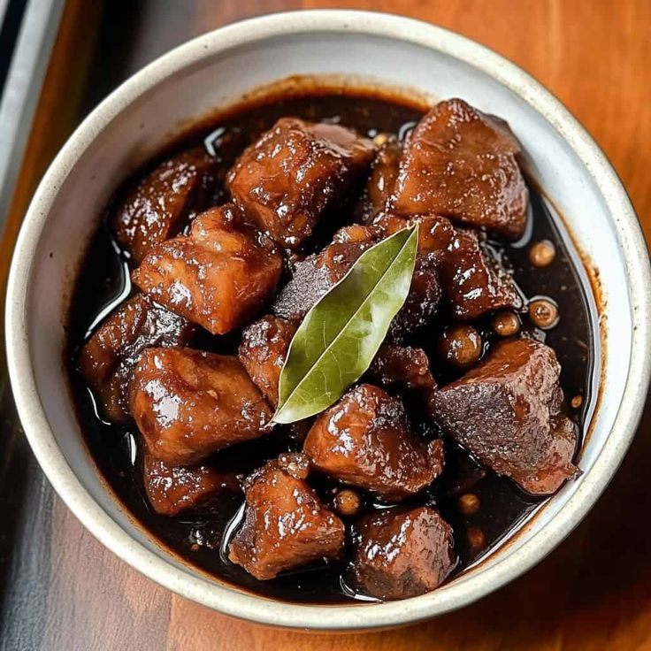

Pork Adobo
Pork Adobo is a classic Filipino dish made with tender pork simmered in soy sauce, vinegar, garlic, bay leaves, and peppercorns. This savory one-pot dish is slow-cooked until the meat is juicy and deeply flavorful. It features a rich balance of salty, tangy, and garlicky notes that Filipinos love. Perfect for family meals, gatherings, and even better when enjoyed the next day!
About This Dish
Adobo comes from the Spanish word 'adobar,' meaning to marinate. The dish existed even before Spanish colonization, as early Filipinos used vinegar and salt to preserve meat in the tropical climate. When the Spanish arrived, they named the cooking method 'adobo' because it resembled their own marinated dishes. Today, pork adobo is considered the unofficial national dish of the Philippines and is commonly served at family meals and special occasions, symbolizing comfort and tradition.
Ingredients
- 2 lbs pork, cut into 2-inch chunks
- 1/2 cup soy sauce
- 2 whole heads of garlic, crushed
- 5 dried bay leaves
- 4 tablespsoons white vinegar
- 1 tablespoon whole black peppercorns
- 2 cups water
- Salt to taste
Instructions
Cut your pork belly into 2-inch chunks. Place the meat in a bowl and mix it with soy sauce and crushed garlic. Let this marinate in the refrigerator for at least 1 hour.
Heat your pot over medium-high heat (350°F/175°C). Once hot, put in your marinated pork along with all the marinade. Cook for about 5 minutes until the meat starts to brown slightly.
Pour in 2 cups of water. Add your whole peppercorns and dried bay leaves. Wait for it to boil, then lower the heat to medium-low (300°F/150°C). Cover the pot and let it simmer for 40 minutes, checking occasionally to make sure there's enough liquid.
Add the vinegar to your pot. Here's an important tip: don't stir it right away. Let it simmer quietly for 3 minutes first, this keeps the vinegar from becoming bitter. After waiting, you can give everything a gentle stir.
Let everything cook together for another 12-15 minutes with the lid off. This helps the sauce become richer and thicker. If you want less sauce, cook it a bit longer.
Taste the sauce and add a little salt if needed. Once you're happy with the taste, turn off the heat and let your adobo rest for 5 minutes.
Your pork adobo is now ready to serve. Put it in a bowl and serve hot with plenty of steamed rice. Don't forget to spoon some of that flavorful sauce over your rice.
Pro Tips
- Choose pork belly with a good meat-to-fat ratio (70:30) for the perfect balance of flavor and texture. The fat will render during cooking, creating a luscious sauce.
- Never stir immediately after adding vinegar to prevent it from becoming bitter. Let it cook undisturbed for at least 3 minutes to preserve its bright flavor.
- Crush garlic cloves instead of mincing them to release more aromatic oils and create a deeper flavor base.
- Score the meat's surface before marinating to allow better flavor absorption and more tender results.
- A gentle, slow simmer is crucial for developing depth of flavor and achieving that signature melt-in-your-mouth texture.
- If you can resist eating it all immediately, save some for the next day when the flavors will have intensified beautifully.
Cultural Significance
In Filipino cilture, pork adobo represents home, comfort, and tradition, as it is one of the most commonly prepared dishes in households across the country. Because it keeps well and even better over time, adobo also symbolizes practicality and resilience in Filipino life.
Recipe Quiz
Test your knowledge about this Pork Adobo recipe!
Show Correct Answers
- 1. 15 minutes
- 2. 1 hour
- 3. 4-6 servings
- 4. 2 inches
- 5. to marinate
Community Reviews (6)
Aiden Winston
June 6, 2023Very tasty and comforting! The pork was tender and flavorful, and it tasted even better the next day. I added a little sugar for balance and it turned out great. Would definitely make this again.
Aelira Navarro
September 10, 2024Absolutely delicious! This adobo tasted just like home. The instructions were clear, the sauce was rich and flavorful, and my whole family loved it. This will be a regular recipe in our kitchen.
Emi Del Rosario
February 16, 2026The recipe was easy to follow and the flavors were good. Just need to adjust the seasonings for myself, but its really good overall.